CofiFab: Coarse-to-Fine Fabrication of Large 3D Objects
Figure 1:CofiFab is a novel coarse-to-fine 3D fabrication technique, cost-effectively combining 3D printing and 2D laser cutting for supporting fabrication of large 3D objects. Given the input MAX PLANCK model, CofiFab generates a coarse shape proxy with two internal polyhedral bases (a) and an external shell (b) with thin pieces. Each internal base (c), produced by laser cutting, is assembled with a well-designed interlocking joints network. The external shell, realized by 3D printing, is then attached piece by piece to the internal bases with 3D-printed screws and bolts (d). The final fabricated object is around 24 inches tall (e). A mug is put beside the object as a size reference.
Abstract
This paper presents CofiFab, a coarse-to-fine 3D fabrication solution, which combines 3D printing and 2D laser cutting for cost-effective fabrication of large objects at lower cost and higher speed. Our key approach is to first build coarse internal base structures within the given 3D object using laser-cutting, and then attach thin 3D-printed parts, as an external shell, onto the base to recover the fine surface details. CofiFab achieves this with three novel algorithmic components. First, we formulate an optimization model to compute fabricatable polyhedrons of maximized volume, as the geometry of the internal base. Second, we devise a new interlocking scheme to tightly connect laser-cut parts into a strong internal base, by iteratively building a network of nonorthogonal interlocking joints and locking parts around polyhedral corners. Lastly, we also optimize the partitioning of the external object shell into 3D-printable parts, while saving support material and avoiding overhangs. These components also consider aesthetics, stability and balancing in addition to cost saving. As a result, CofiFab can efficiently produce large objects by assembly. To evaluate its effectiveness, we fabricate objects of varying shapes and sizes, where CofiFab significantly improves compared to previous methods.
Press Coverage
fastcodesign: 16 Wild Research Experiments That Could Change Design
USTC: Significant Progress in 3D Printing: Coarse-to-Fine Fabrication of Large Objects
中科大：“3D打印研究再获重大进展：实现快速和廉价制造大物体的技术“
爱微帮：“3D打印新技术：打印物体越大越省钱”
Paper
high-res PDF (~20M)
low-res PDF (~3M)
supplementary material (~0.2M)
Models
|
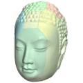
Buddaha Head |
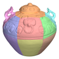
Celadon |
House |
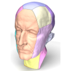
Max Planck |
|
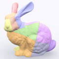
Bunny |
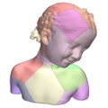
Bimba |
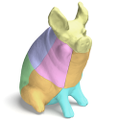
Garden Pig |
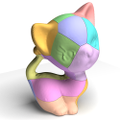
Kitten |
|
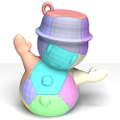
Snowman |
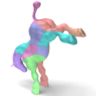
Horse |
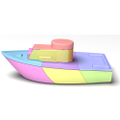
Toy Boat |
Buddha |
|
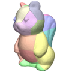
Squirrel |
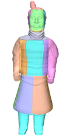
Terra Cotta Warrior |
Video
Images
Figure 2: Overview. (a) input model; (b&c) optimized results: coarse polyhedrons (internal bases) and fine 3D-printed parts (external shell); (d) interlocked laser-cut assemblies; (e) 3D-printed parts; (f) laser-cut parts; (g) assembled laser-cut bases; and (h) final assembled object.
Figure 3: Results produced by CofiFab, from left to right: CELADON, BUDDHA HEAD, BIMBA, SQUIRREL, and BUDDHA.
Figure 4: Snapshots in assembling KITTEN (top) and SNOWMAN (bottom). The key of each interlocking base is colored in red.
Figure 5: Physical fabricated assembly: HOUSE, GARDEN PIG, and TERRA COTTA WARRIOR models (from top to bottom).
Acknowledgments
We thank the reviewers for the valuable comments. Some of the models are provided by Thingiverse, CGTrader, dayin.la, and SCAN THE WORLD initiative. This work is supported by the National Natural Science Foundation of China (61222206, 11526212, 61403357), the One Hundred Talent Project of the Chinese Academy of Sciences, and the Chinese University of Hong Kong strategic recruitment fund and direct grant (4055061).
Bibtex
@article {Song-2016-CofiFab,
title = {{CofiFab}: Coarse-to-Fine Fabrication of Large 3D Objects},
author = {Peng Song and Bailin Deng and Ziqi Wang and Zhichao Dong and Wei Li and Chi-Wing Fu and Ligang Liu},
journal = {ACM Transactions on Graphics (SIGGRAPH 2016)},
volume = {35},
number = {4},
note = {Article 45},
year = {2016},
}